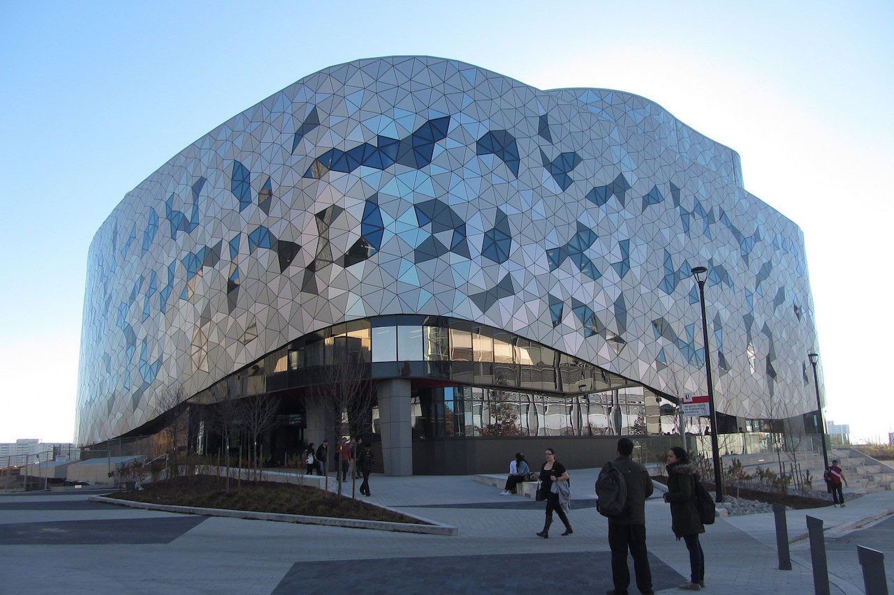
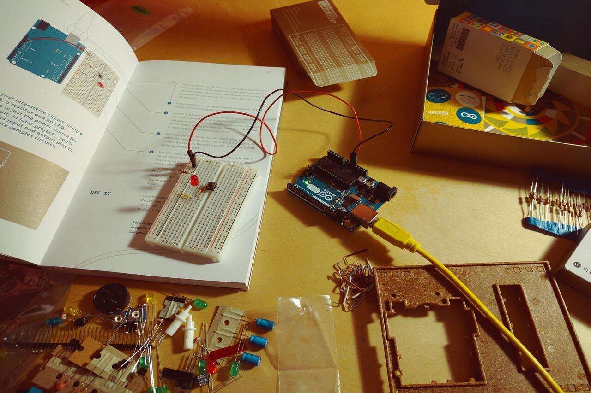

Get To know Me!
A dependable, bilingual, and detail-oriented Computer Engineering student at York University seeking an intern position. Possess exceptional software and electrical engineering skills gained through relevant education and projects. Possess hands-on experience in developing various programming languages and designing electrical circuits. Familiar with SDLC, and capable of thinking out-of-the box to create seamless, exciting products for the target audience. Excellent analytical thinking and written/verbal communication skills. Some of my hobbies are soccer, reading and bodybuilding.

Honours B.Eng in Computer Engineering, class of 2023. Member of the Dean's Honour List 2019 - presentRelevant Courses: Object Oriented Programming - Java Algorithms and Data StructuresEmbedded Systems - Bash and C Signals and Systems electronic circuits and devices - LabView Computer Architectures Circuit Analysis - MATLAB & AutoCAD electrical
Position: Computing Solutions Advisor• Demonstrate ability to successfully build relationships with customers by greeting them warmly, listening carefully to clarify needs and recommending products to influence customer buying decisions.
• Maintained strong relationships with customers, providers, and clients through consistent follow up via phone.
• Utilize all relevant sales tools to drive profitable growth and increase the profit-margin for Protection Plans by Geek Squad.

Here are a few projects and interesting labs: Project 1: Designed a full-wave rectifier that converts AC to DC by implementing a diode rectifier. The circuit was simulated on AutoCAD electrical and MATLAB Project 2: Applied circuit analysis and design to build a circuit that turns on a small fan when the temperature become above a 20 C and adjust the speed relatively by using a breadboard, resistors, LabView and a temperature sensor. + Many more
• Operating Systems: Linux, Windows, Unix.
• Web Development: HTML5, CSS, product design.
• Programming Languages: Java, C, Bash, MATLAB, R.
• Development tools: Stack Overflow, GitHub.
• Expertise in computer architecture and circuit design
• Expertise in Objected Oriented programming (140h+).
• Bilingual: fluent in both English and Arabic.